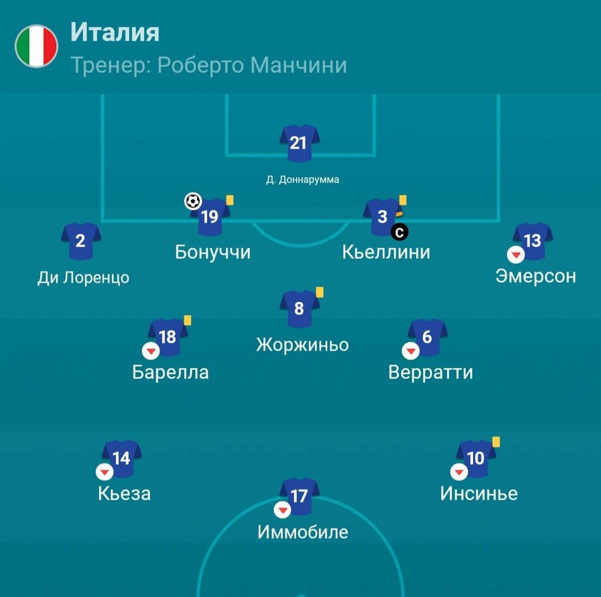

Редакция спорта
Италия — чемпион


Финал чемпионата Европы по футболу. Италия играет против Англии на главном стадионе Лондона Уэмбли. Итальянцы вышли уже четвертый раз в финал евро, англичане первый. Но несмотря на энтузиазм своего первого финала европы, англичане не смогли заполучить главный трофей. Италия побеждает по пенальти (3-2). Основной счет 1:1.
Благодаря Боннучи итальянцы смогли дойти до пенальти, где никто не сомневался на победу сборной Италии. Сомнений не было из-за молодого игрока Джанлуиджи Доннарумма, который был признан лучшим игроком чемпионата.
Италия далеко не первый раз выходит в финал Евро. В двух финалах из четырех они заполучили главный трофей чемпионата.
Италия шла к финалу без единого поражения в ЧЕ 2020. В самом начале финала опытный английский игрок Люк Шоу на 2 минуте забил гол в ворота Италии, после чего англичане расслабились, что, возможно, и помешало им получить 1 место. Итальянская сборная не сдалась после сразу же забитого гола. Итальянцы играли сплоченно, командой, поэтому их было довольно непросто обыграть.
Основной состав сборной Италии в финале против Англии
Автор статьи: Черкасов Петр
Мои контакты: